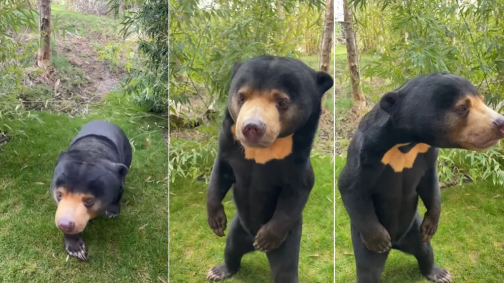

O urso malaio (Helarctos malayanus) é a menor espécie de urso, com pelagem geralmente negra, mas podendo ser avermelhada ou cinza, e uma mancha clara no peito e na face. Tem pernas dianteiras curvadas para dentro e grandes garras em forma de foice. Adultos medem de 1,20 a 1,50 m de comprimento e pesam entre 27 e 80 kg, sendo os machos ligeiramente maiores que as fêmeas. Possui língua longa, ótima para extrair mel e capturar insetos.
O urso malaio habita florestas tropicais do sudeste asiático, incluindo partes da Índia, Myanmar, Tailândia, Malásia, Laos, Camboja, Vietnã, sul da China e ilhas de Sumatra e Bornéu. Sua distribuição é irregular e diminuiu em muitas áreas originais.
Por viver em regiões tropicais com alimento abundante o ano todo, o urso malaio não hiberna. Geralmente solitários e ativos durante o dia, alguns podem ser vistos brevemente à noite. Descansam em troncos ocos caídos ou em cima de árvores.

Ordem: Carnivora
Família: Ursidae
Gênero: Helarctos
Espécie: Helarctos malayanus